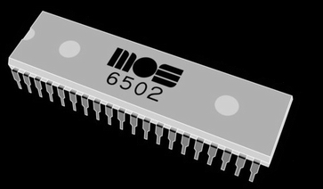
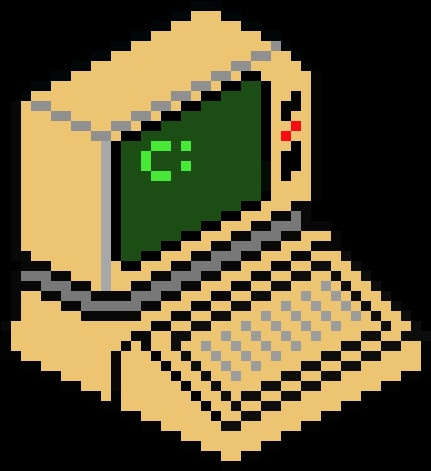
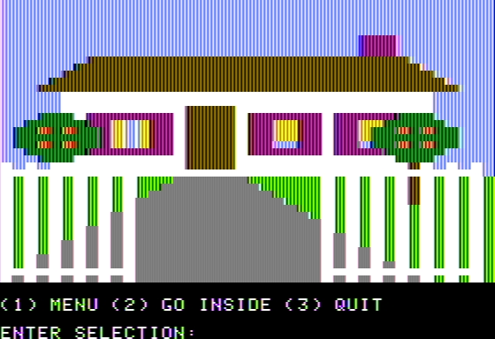
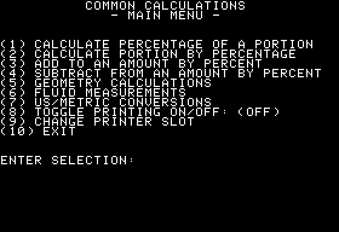
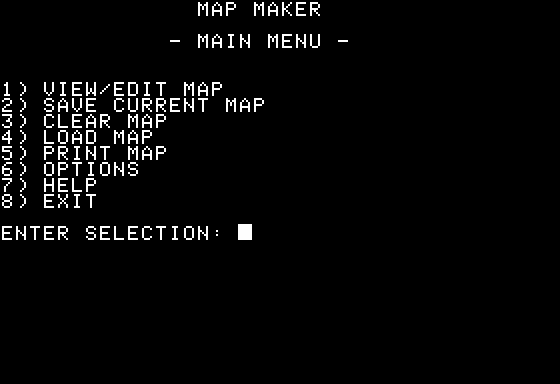
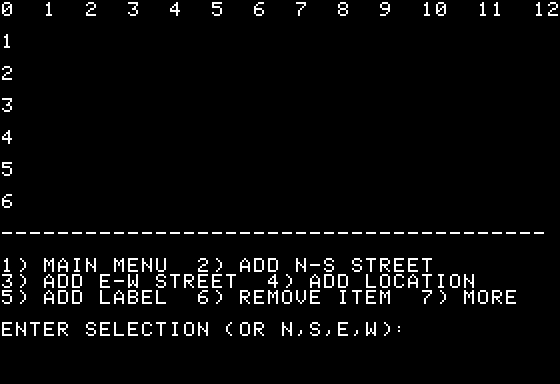
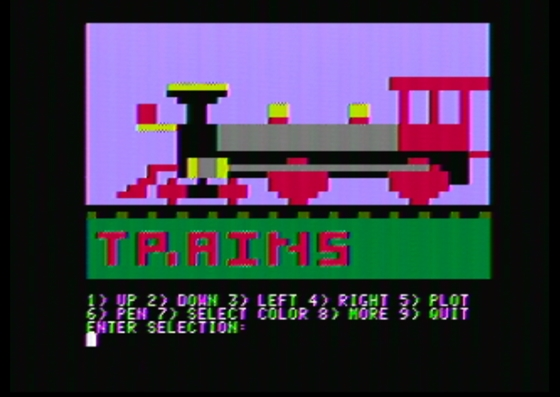
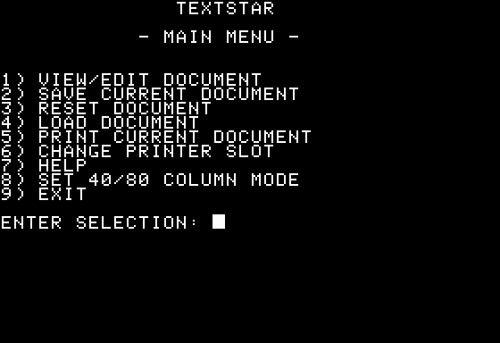
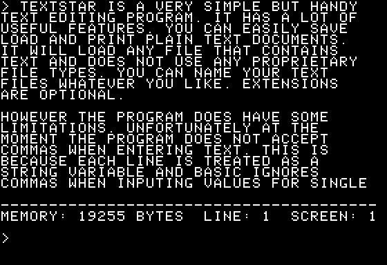

Send email
About

Welcome To Lab6502
[NEW programs for vintage computers!]

If you're a hobbyist interested in early 8-bit computers, you've come to the right place! Here you will find new BASIC programs, available as either disk images which you can run on an emulator, OR on real floppy disks that you can run on an actual vintage computer. Disk images are available for free, physical copies are available for purchase.
I am also working on modern Windows programs with a "retro" feel. More information will be available about this in the future. For now, I'm focusing on 8-bit vintage computers!
This is a continuous work in progress. New programs will be added soon!
All programs written by Christian Tobar, unless otherwise noted.
BASIC Programs Available For Apple II+ Computers:
*IMPORTANT NOTE: Download links are to ZIP files. Once you save and extract the zip file, you have several options to use the Apple II program. If you want to use an emulator, such as AppleWin, use the included disk image (usually a .do file). If you're using a real Apple II computer, there are 2 methods to transfer the program from your modern computer to the Apple II. You can use a serial or serial-to-usb cable and send the text from the included BASIC code with a serial connection to the Apple II. OR you can use the included .wav sound file to transfer the program by connecting an audio cable to the Apple II "casette input" jack. The wav file includes a utility which will automatically save the BASIC program onto a floppy disk. Insert a blank disk into the Apple II disk drive, and type "LOAD" on the Apple II. Then play the .wav file. Please also read the included "README" file for more information!
Remember, REAL physical copies with a floppy disk and professionally printed manuals are also available for purchase! If you have an actual vintage Apple II computer, why not use the real thing and get the full experience?! Email me if you're interested!
Cozy Cottage

A cool little program to demonstrate the colors and graphics possible in low resolution (GR) mode. You have a small house in the countryside and can customize it by changing the colors, planting trees, adding furniture to the living room, and much more!
Download disk image
OR buy physical copy on 5.25 inch disk - $10 (no manual): Contact
Common Calculations

This program will do everything but make ice cream! Calculate percentages, do geometry calculations (easily find perimeter, area, and volume), convert between US and Metric measurements, convert fluid measurements...it has pretty much everything you need! There is also an option to print results.
Download disk image
OR buy physical copy on 5.25 inch disk - $10 (no manual): Contact
Map Maker

A program to create your own maps from scratch! Place streets and locations, measure distances, and much more. Your maps can be easily saved and printed. The download also includes a very detailed manual, and it's HIGHLY recommended that you read it before using the program.
Download disk image
OR buy physical copy on 5.25 inch disk - $25 (includes printed and bound manual): Contact
ColorBit drawing program

This is a neat little program to draw and edit pictures using the low resolution mode (GR). Pictures can also be easily saved and loaded. The program works perfectly on a real Apple II computer, but there are a few minor issues when using it on the AppleWin emulator. Please see the README text file in the download.
Download disk image
OR buy physical copy on 5.25 inch disk - $10 (no manual): Contact
TextStar

A bare bones simple but very handy text editing program. Easily edit, save, load, and print text files. Please read the included README file in the download, as it has very important instructions in how to use the program!
Download disk image
OR buy physical copy on 5.25 inch disk - $10 (no manual): Contact
Copyright Christian Tobar. 2021
Contact: gatewaycityca@yahoo.com